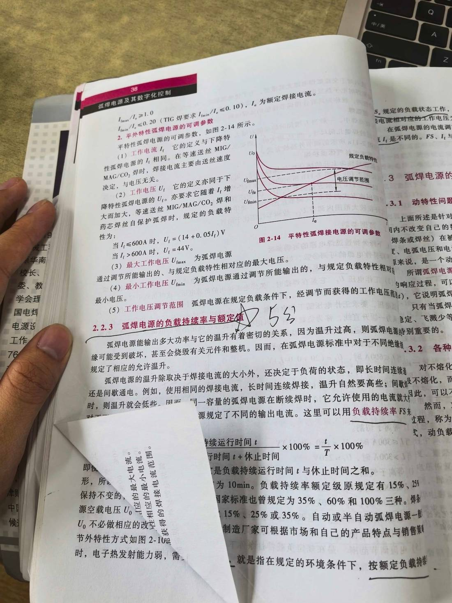

13 手写笔记/课堂实拍/kt-09 教材 p38：平外特性可调参数 ＋ 负载持续率
kt-09 教材 p38：平外特性可调参数 ＋ 负载持续率
📷 课堂实拍 · 老师标注为重点（原图见下；文字为转录，公式/接点以图为准）
教材 p38：平外特性可调参数 ＋ 负载持续率

实拍转录
- 2.2.2 平外特性弧焊电源的可调参数（图 2-14）：I_max/I_e ≥ 1.0；I_min/I_e ≤ 0.20（TIG 焊要求 I_min/I_e ≤ 0.10），I_e 为额定焊接电流。
- （1）工作电流 I_f：定义与下降特性电源相同；等速送丝 MIG/MAG/CO₂ 焊时，焊接电流主要由送丝速度决定，与电压无关。
- （2）工作电压 U_f：降特性电源的 U_f。亦要求它随着 I_f 增大而加大；等速送丝 MIG/MAG/CO₂ 焊和药芯焊丝自保护弧焊时，规定的负载特性为：I_f ≤ 600A 时 U_f =（14 + 0.05 I_f）V；I_f > 600A 时 U_f = 44V。
- （3）最大工作电压 U_fmax／（4）最小工作电压 U_fmin：通过调节所能输出的、与规定负载特性相对应的最大/最小电压。
- （5）工作电压调节范围：弧焊电源在规定负载条件下，经调节而获得的工作电压范围。
- 2.2.3 弧焊电源的负载持续率与额定值：输出多大功率与温升有密切关系（红笔手写标注箭头）。
- 负载持续率 FS = 负载持续运行时间 t ÷（运行时间 t + 休止时间 t₀）×100% = t/T ×100%；T 为负载持续运行时间与休止时间之和，为 10 min。
- 负载持续率额定级原规定有 15%、25%；国家标准也曾规定为 35%、60% 和 100% 三种；焊条电弧焊 15%、25% 或 35%；自动或半自动弧焊电源一般按 60%。
本页重点
- 平特性可调参数四个量：I_max/I_e、I_min/I_e、U_fmax/U_fmin、电压调节范围。
- MIG/MAG/CO₂ 等速送丝：电流由送丝速度定，电压按 U_f = 14 + 0.05I_f（≤600A）算，>600A 取 44V。
- 负载持续率 FS = t/T×100%，T = 10 min；额定级 15%/25%/35%/60%/100%，焊条常用 15%~35%。
- 逻辑链：输出功率 → 温升 → 额定电流必须绑定负载持续率给出。
考点（怎么考）
- 计算：给 t 与 t₀ 求 FS，或给 FS 与 I 求允许的连续电流。
- 写约定负载特性公式（与 p069 的四条公式对照记）。
- 为什么同一台焊机在小负载持续率下能给出更大的电流？
对应讲义页
- p071 · 平外特性电源的可调参数及范围
- p070 · 下降特性电源的可调参数及范围
- p067 · 2.4 弧焊电源的调节特性
- p073 · 弧焊电源的输出功率与它的
- p069 · 常用弧焊方法的约定负载特性如下
关联
- 概念卡：调节特性 · 负载持续率 · 外特性
- 讲义：00 第2章 基本电气特性 导航 · 总览：课堂实拍总览
- 索引：01 弧焊电源 MOC · 课件标红总表